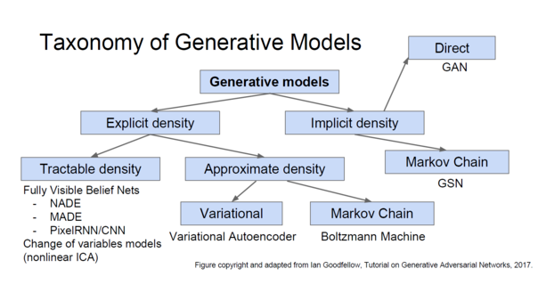
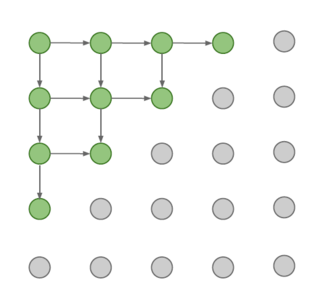
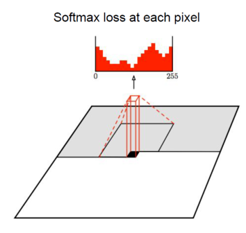

监督学习与无监督学习
监督学习
Data: (x, y)
x is data, y is label
Goal: Learn a function to map x -> y
Example: Classification, regression, object detection, semantic segmentation, image captioning, etc.
无监督学习
Data: x
Just data, no labels
Goal: Learn some underlying hidden structure of the data
Example: Clustering, dimensionality reduction, feature learning, density estimation, etc.
生成模型
定义
给定一组训练集，生成一个与训练集相同的分布，从该分布中生成新的样本。
解决密度估算是无监督学习中的核心问题。
密度估算问题分两种：
- 显式密度估算：显式地定义一个模型pmodel(x)并解出这个模型；
- 隐式密度估算：直接学习能从pmodel(x)中产生样本的模型，而不用显式地定义该function
分类

PixelRNN and PixelCNN
全可见信念网络（Fully visible belief network）
显式密度模型。通过链式法则把似然值分解为一维分布的乘积。

然后最大化图片x的似然值，即所有生成像素点取可能性最高的像素值。
PixelRNN

从图片左上角开始延对角线生成像素，每个像素点生成是由所依赖的像素点（箭头连接）决定的。
PixelRNN可以生成很好的样本，但因为是顺序生成，所有生成速度非常慢。
PixelCNN

与PixelRNN类似，也是从左上角开始生成像素，不同的是生成像素点的像素值由包围它的像素点决定（黑框部分）